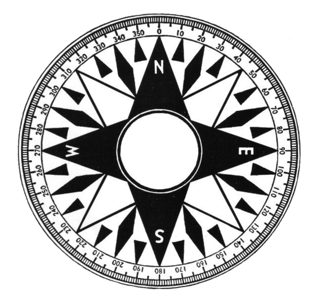

<DOCTYPE html>
<html>
  
<!-- Mirrored from webkay.robinlinus.com/compass/index.html by HTTrack Website Copier/3.x [XR&CO'2014], Wed, 05 Jun 2019 12:30:45 GMT -->
<head>
    <style>
      #compass{
        width:100%;
        transform-origin: 50% 50%;
        -webkit-transform-origin: 50% 50%;
        -moz-transform-origin: 50% 50%;
      }
    </style>
    <script>
      function init() {
        var compass = document.getElementById('compass');
        if(window.DeviceOrientationEvent) {
  
          window.addEventListener('deviceorientation', function(event) {
                var alpha;
                //Check for iOS property
                if(event.webkitCompassHeading) {
                  alpha = event.webkitCompassHeading;
                  //Rotation is reversed for iOS
                  compass.style.WebkitTransform = 'rotate(-' + alpha + 'deg)';
                }
                //non iOS
                else {
                  alpha = event.alpha;
                  webkitAlpha = alpha;
                  if(!window.chrome) {
                    //Assume Android stock (this is crude, but good enough for our example) and apply offset
                    webkitAlpha = alpha-270;
                  }
                }

                compass.style.Transform = 'rotate(' + alpha + 'deg)';
                compass.style.WebkitTransform = 'rotate('+ webkitAlpha + 'deg)';
                //Rotation is reversed for FF
                compass.style.MozTransform = 'rotate(-' + alpha + 'deg)'; 
              }, false);
        }
      }
    </script>
  </head>
  <body onload="init()">
    <div id="compassContainer">
      
    </div>
  </body>

<!-- Mirrored from webkay.robinlinus.com/compass/index.html by HTTrack Website Copier/3.x [XR&CO'2014], Wed, 05 Jun 2019 12:30:45 GMT -->
</html>